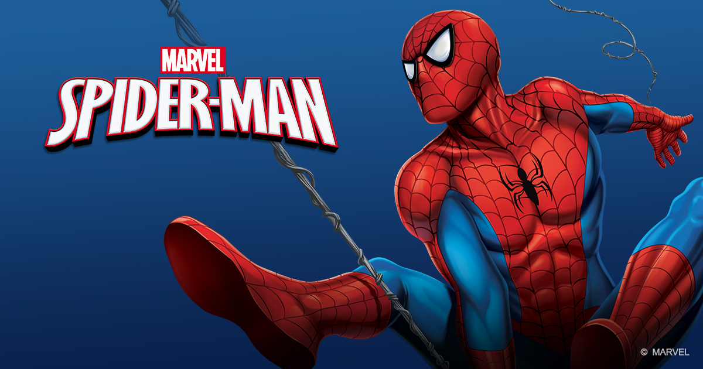
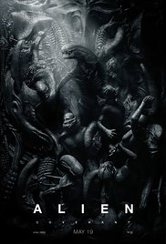
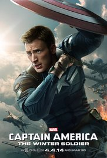
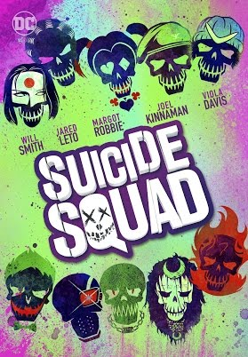
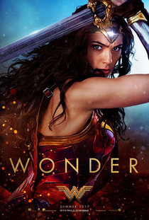

| Cartelera | ||
| Sala | Pelicula | Hora |
| 1 | Spiderman  | 8:00 |
| 2 | alien  | 7:00 |
| 3 | Capitan america  | 9:00 |
| 4 | suicide squad  | 9:00 |
| 5 | Wonder woman  | 9:30 |
Esta saga de películas se basa libremente en un contexto histórico que incluye seres y piratas que han existido anteriormente en las leyendas históricas sobre el mar, como el pirata Davy Jones y su tripulación fantasmal a bordo de El holandés errante, también se basa en la mitología griega que incluyen dioses del mar, monstruos mitológicos como el Kraken, y también en un contexto ficticio referente a varios personajes que aparecen en las películas de esta franquicia. En un mundo gobernado en gran parte por versiones alternativas del Imperio británico, la Compañía de las Indias Orientales y el Imperio Español, con los piratas representando la autonomía respecto de los poderes gobernantes.